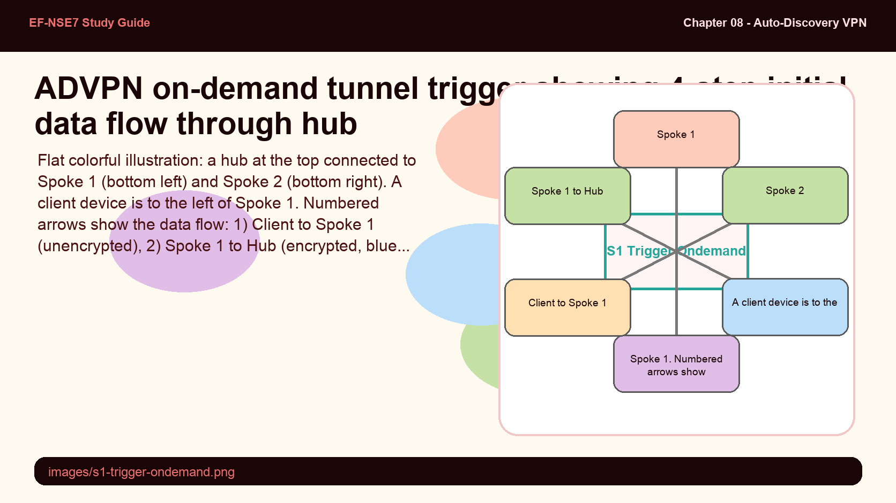
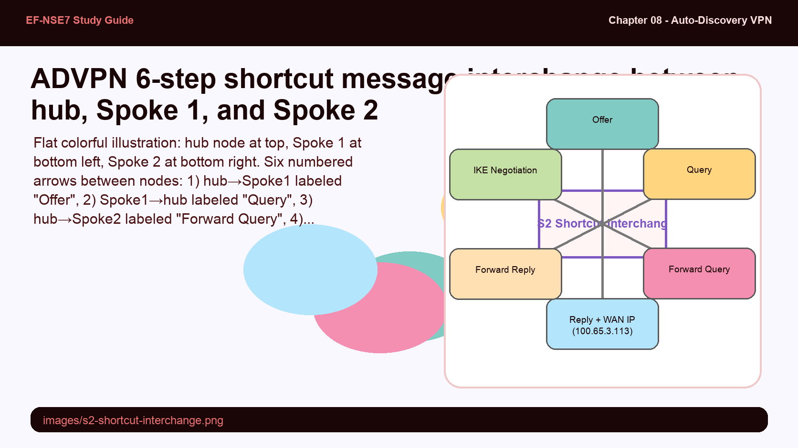
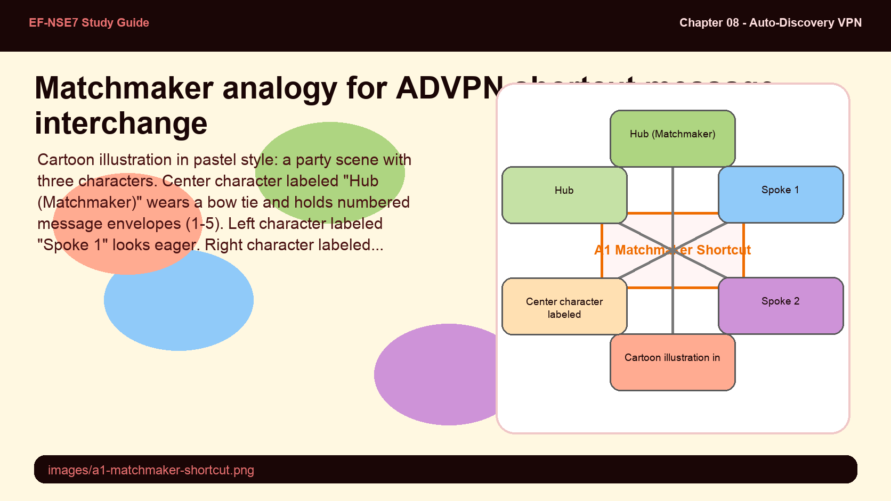
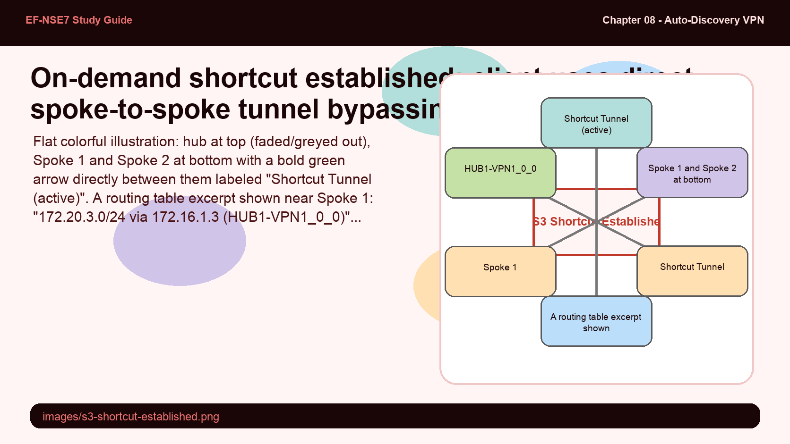
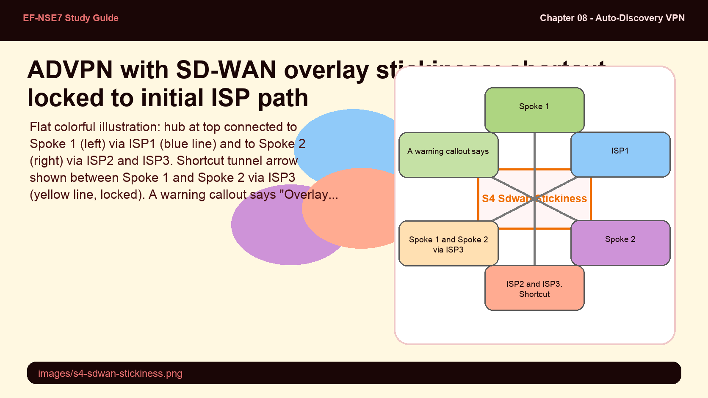
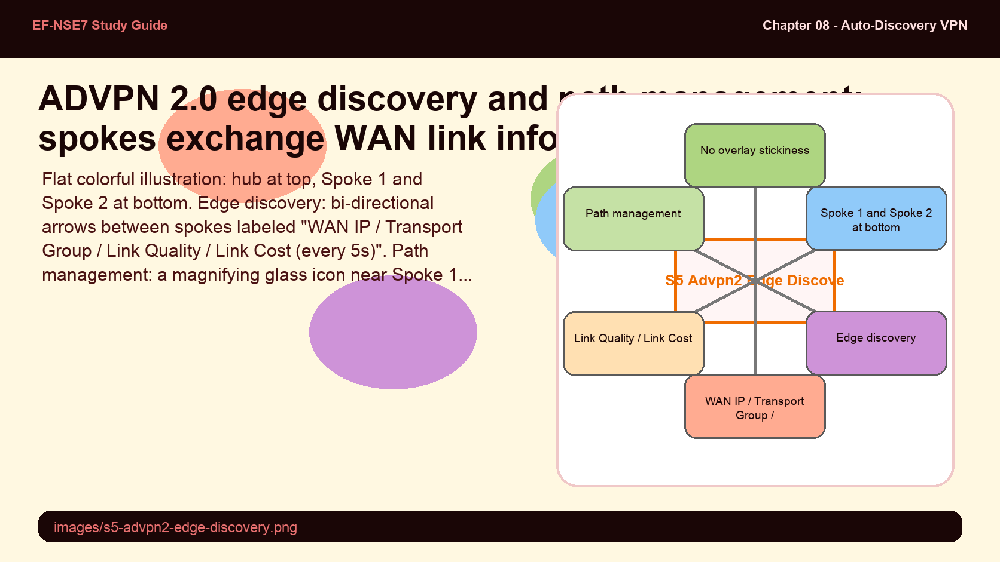

Understand the 6-step shortcut message interchange, how on-demand tunnels are triggered and established, overlay stickiness in SD-WAN, and ADVPN 2.0's edge discovery and path management improvements — all high-value exam topics.
The shortcut is the heart of ADVPN — six messages that transform a hub detour into a direct path.
Know the exact 6-step offer→query→forward→reply→forward→negotiate sequence and understand why overlay stickiness is a limitation ADVPN 2.0 solves.
💭THINK FIRST · TRIGGERING ON-DEMAND
ADVPN shortcuts don't appear magically — a client must generate actual data traffic first to trigger the process. The hub is the key actor that detects the need for a shortcut and initiates the negotiation. The spokes don't know about each other until the hub introduces them.
Before the shortcut tunnel exists, how does Spoke 1 send traffic to a device behind Spoke 2? Walk through the exact encryption path the packet takes.
What would happen to ADVPN shortcut establishment if the hub's firewall policy didn't permit spoke-to-spoke transit traffic (traffic from the VPN1 interface back out the VPN1 interface)?
Q1 — MODEL ANSWER
Before the shortcut: (1) Client behind Spoke 1 generates traffic destined for a device behind Spoke 2. (2) Spoke 1 receives the packet and encrypts it inside the existing hub tunnel, sending it to the hub. (3) The hub decrypts the packet, sees the destination is behind Spoke 2, re-encrypts it into the Spoke 2 tunnel, and forwards it. (4) Spoke 2 decrypts and delivers to the destination. All inter-spoke traffic traverses the hub in both directions until the shortcut is established.
Q2 — MODEL ANSWER
If the hub has no policy permitting spoke-to-spoke transit, the initial data packets are dropped at the hub before the shortcut negotiation can even begin. ADVPN shortcut signaling is triggered by the detection of inter-spoke data traffic transiting the hub — without that traffic passing through, the hub never sends the shortcut offer to Spoke 1, and the shortcut tunnel is never established.
SECTION 01
Triggering the On-Demand IPsec Tunnel

📷 images/s1-trigger-ondemand.png
Step 1–4: Client generates traffic → Spoke 1 encrypts to hub → Hub forwards encrypted to Spoke 2 → Spoke 2 decrypts and delivers. This initial flow triggers the shortcut offer.
Flat colorful illustration: a hub at the top connected to Spoke 1 (bottom left) and Spoke 2 (bottom right). A client device is to the left of Spoke 1. Numbered arrows show the data flow: 1) Client to Spoke 1 (unencrypted), 2) Spoke 1 to Hub (encrypted, blue dashed), 3) Hub to Spoke 2 (encrypted, blue dashed), 4) Spoke 2 to destination device (decrypted). Small config boxes show auto-discovery-sender on hub and auto-discovery-receiver on spoke. Pastel palette, bold outlines, no shadows.
ADVPN shortcut establishment requires actual data traffic to flow first. The process is triggered when a client behind one spoke generates traffic destined for a device behind another spoke. Before any shortcut exists, this traffic takes the classic hub path:
Client generates unencrypted traffic destined for a host behind Spoke 2.
Spoke 1 encrypts the packet and sends it via the existing hub IPsec tunnel.
Hub receives, decrypts, re-encrypts, and forwards the packet toward Spoke 2.
Spoke 2 decrypts and delivers the packet to the destination device.
When the hub detects inter-spoke traffic transiting its IPsec interface (traffic arriving from and destined back to the same ADVPN tunnel), it triggers the shortcut message sequence. The hub's auto-discovery-sender setting causes it to initiate this process automatically.
Note: The hub must have firewall policies permitting spoke-to-spoke transit traffic for ADVPN to function. Traffic that the hub drops before forwarding will never trigger a shortcut offer.
🧠
MENTAL NOTE
Shortcut trigger = real data traffic transiting the hub (spoke-to-spoke). No data traffic = no shortcut. The hub detects this and sends a shortcut offer to the initiating spoke. Firewall policy must allow spoke-to-spoke transit on the hub.
ASK A QUESTION
ADD A NOTE
💭THINK FIRST · 6-STEP INTERCHANGE
The shortcut message interchange involves all three FortiGate devices — hub, Spoke 1, and Spoke 2 — each playing a specific role in a tightly choreographed sequence. The hub acts as the matchmaker: it knows both spokes' WAN IP addresses and brokers the introduction without the spokes ever directly communicating until step 6.
In step 4 of the shortcut interchange, Spoke 2 sends a "shortcut reply" that includes its own WAN IP address. Why must Spoke 2 actively send its WAN IP — can't the hub already provide this information from its own records?
Why does the actual IKE negotiation (step 6) happen directly between Spoke 1 and Spoke 2 rather than going through the hub?
Q1 — MODEL ANSWER
The hub does know Spoke 2's WAN IP from the established IPsec tunnel, but having Spoke 2 actively include its own WAN IP in the reply ensures the address is current and accurate. More importantly, in NAT scenarios, the WAN IP used by Spoke 2 to reach the hub may differ from the address that Spoke 1 needs to use to reach Spoke 2 directly. By requiring Spoke 2 to send the reply, ADVPN captures the actual IP that Spoke 2's peer endpoint should use.
Q2 — MODEL ANSWER
The IKE negotiation happens directly between Spoke 1 and Spoke 2 because the purpose of the entire shortcut process is to bypass the hub for data traffic. If the IKE negotiation itself went through the hub, that would defeat the purpose — the hub would still be in the path during the tunnel setup phase. The shortcut message interchange gives Spoke 1 the target WAN IP of Spoke 2, enabling Spoke 1 to initiate IKE directly to Spoke 2's public IP.
SECTION 02
ADVPN Shortcut Message Interchange

📷 images/s2-shortcut-interchange.png
The 6-step ADVPN shortcut interchange: Offer (hub→S1), Query (S1→hub), Forward (hub→S2), Reply with WAN IP (S2→hub), Forward (hub→S1), IKE Negotiate (S1↔S2 direct).
Flat colorful illustration: hub node at top, Spoke 1 at bottom left, Spoke 2 at bottom right. Six numbered arrows between nodes: 1) hub→Spoke1 labeled "Offer", 2) Spoke1→hub labeled "Query", 3) hub→Spoke2 labeled "Forward Query", 4) Spoke2→hub labeled "Reply + WAN IP (100.65.3.113)", 5) hub→Spoke1 labeled "Forward Reply", 6) Spoke1↔Spoke2 direct arrow labeled "IKE Negotiation". Pastel palette, bold outlines, no shadows, labels clearly visible.
Once data traffic triggers the process, three FortiGate devices participate in the 6-step shortcut message interchange. These are control-plane messages separate from data traffic — they use the existing hub tunnels to coordinate the new spoke-to-spoke tunnel:
Offer: The hub sends a shortcut offer message to Spoke 1, suggesting a more direct tunnel to Spoke 2 is available.
Query: Spoke 1 acknowledges the offer by sending a shortcut query back to the hub, requesting Spoke 2's contact information.
Forward (Query): The hub forwards the shortcut query to Spoke 2.
Reply: Spoke 2 acknowledges the query and sends a shortcut reply to the hub, including its WAN IP address (e.g., 100.65.3.113).
Forward (Reply): The hub forwards Spoke 2's shortcut reply — including the WAN IP — to Spoke 1.
Negotiation: Spoke 1 and Spoke 2 directly initiate IKE tunnel negotiation using Spoke 2's WAN IP address. The hub is no longer involved.
Exam tip: Know all 6 steps by name: Offer → Query → Forward → Reply → Forward → Negotiation. The hub participates in steps 1–5 but NOT step 6. The WAN IP of Spoke 2 is delivered to Spoke 1 in step 5 (the forwarded reply).
Analogy
The ADVPN shortcut interchange is like a matchmaker at a party who introduces two guests and then steps aside.
Hub (matchmaker) — knows everyone at the party and brokers the introduction between two guests who don't yet know each other
Shortcut offer — matchmaker taps Spoke 1 on the shoulder: "I think you two should meet directly"
WAN IP in the reply — Spoke 2 hands over a business card (their contact info) to the matchmaker to pass along
Direct IKE negotiation — the two guests exchange contact info and arrange their own direct conversation, no longer needing the matchmaker

📷 images/a1-matchmaker-shortcut.png — add this image to the folder
Cartoon illustration in pastel style: a party scene with three characters. Center character labeled "Hub (Matchmaker)" wears a bow tie and holds numbered message envelopes (1-5). Left character labeled "Spoke 1" looks eager. Right character labeled "Spoke 2" holds a business card. Final panel shows Spoke 1 and Spoke 2 shaking hands directly (step 6) while the matchmaker steps aside. Bold outlines, no shadows, flat pastel colors, numbered steps visible on the envelopes.
🧠
MENTAL NOTE
6 steps: Offer(hub→S1) → Query(S1→hub) → Forward(hub→S2) → Reply+WAN IP(S2→hub) → Forward(hub→S1) → IKE Negotiate(S1↔S2 direct). Hub exits after step 5. Spoke 2's WAN IP is the key piece of data that enables direct IKE in step 6.
ASK A QUESTION
ADD A NOTE
💭THINK FIRST · SHORTCUT ESTABLISHED
Once the shortcut tunnel is up, the routing table changes. The next-hop for Spoke 2's subnet via Spoke 1 shifts from the hub's overlay IP to Spoke 2's overlay IP — but the routing protocol (BGP) still runs on the overlay, not the shortcut tunnel's underlay IPs. This is a subtle but important distinction.
After the shortcut is established, the routing table shows the next-hop as 172.16.1.3 (Spoke 2's overlay IP). The actual IPsec tunnel was built to 100.65.3.113 (Spoke 2's underlay WAN IP). How does FortiGate resolve this — how does a packet routed to overlay IP 172.16.1.3 end up inside the shortcut tunnel to underlay IP 100.65.3.113?
Why is the overlay network required for dynamic routing to work in ADVPN? What breaks if you remove overlay IP addresses from the IPsec interfaces?
Q1 — MODEL ANSWER
The IPsec virtual interface associated with the shortcut tunnel has the overlay IP 172.16.1.3 assigned to it. When Spoke 1's routing table routes traffic to 172.16.1.3, it's actually routing to the shortcut IPsec virtual interface — FortiGate then encrypts that traffic into the shortcut SA and sends it to the underlay endpoint 100.65.3.113. The overlay IP is logically bound to the IPsec interface, not the underlay address; they're different layers of the same tunnel object.
Q2 — MODEL ANSWER
Without overlay IPs on the IPsec interfaces, FortiGate has no shared logical network on which to run the routing protocol. BGP requires adjacent peers to be reachable on a common subnet — without the 172.16.1.0/24 overlay, the hub and spokes have no common IP range for BGP peering. Each spoke's local subnets would have no dynamic path to be advertised or discovered, breaking the entire routing redistribution model that ADVPN depends on.
SECTION 03
Shortcut Established — Overlay Routing After Tunnel Up

📷 images/s3-shortcut-established.png
After shortcut establishment: client traffic flows directly Spoke1↔Spoke2 bypassing hub. Routing table next-hop = Spoke 2 overlay IP (172.16.1.3) via shortcut tunnel interface.
Flat colorful illustration: hub at top (faded/greyed out), Spoke 1 and Spoke 2 at bottom with a bold green arrow directly between them labeled "Shortcut Tunnel (active)". A routing table excerpt shown near Spoke 1: "172.20.3.0/24 via 172.16.1.3 (HUB1-VPN1_0_0)". Hub still shows dashed lines to spokes but traffic arrow bypasses it. Overlay network cloud shown between spokes with IPs labeled. Pastel palette, bold outlines, no shadows.
After the 6-step shortcut interchange, the on-demand IPsec tunnel between Spoke 1 and Spoke 2 is established. The client behind Spoke 1 immediately begins using the new direct tunnel — the hub is no longer in the data path for this spoke-pair traffic.
The routing table on Spoke 1 now shows the destination subnet behind Spoke 2 with a next-hop of Spoke 2's overlay IP (e.g., 172.16.1.3), not the hub's overlay IP. The routing entry is marked as "known via BGP" and points to the shortcut IPsec virtual interface:
FortiGate CLI — Routing Table After Shortcut (Spoke 1)
Spoke1 # get router info routing-table details 172.20.3.62
Routing entry for 172.20.3.0/24
Known via "bgp", distance 200, metric 0, best
* vrf 0 172.16.1.3 priority 1 (recursive is directly connected, HUB1-VPN1_0_0)
The overlay network (172.16.1.0/24) is critical for this to work. It provides a shared logical network on which the dynamic routing protocol (BGP/OSPF) can peer and exchange routes. IPsec tunnels are built over underlay IPs (real internet addresses), but routing protocols run over overlay IPs assigned to the IPsec virtual interfaces — these are distinct layers that must not be confused.
Note: When FortiGates have multiple internet connections, each connection requires a separate phase 1 interface with its own overlay IP address. A topology with 3 firewalls and 3 ISPs each results in 9 IPsec virtual interfaces and 9 overlay IP addresses total.
🧠
MENTAL NOTE
After shortcut: next-hop = spoke's overlay IP (not underlay WAN). BGP next-hop is the overlay IPsec interface IP. Routing = overlay; tunneling = underlay. Multiple ISPs = multiple phase 1 interfaces = multiple overlay IPs per device. The shortcut interface appears as HUB1-VPN1_0_0 in the routing table (dynamic spoke interface).
ASK A QUESTION
ADD A NOTE
💭THINK FIRST · SD-WAN & STICKINESS
When ADVPN is combined with SD-WAN, shortcut tunnels are determined by the initial packet's path through the hub — whichever ISP link the SD-WAN rule selected. This creates "overlay stickiness": the shortcut is locked to that ISP link even if a better one becomes available. ADVPN 1.0 has no mechanism to change this without tearing down and re-establishing the shortcut.
In ADVPN with SD-WAN, the initial data packet travels via ISP1 to the hub, which then forwards it to Spoke 2 via ISP2. The shortcut reply contains ISP2's address. When the shortcut tunnel is established, which ISP link does it use — ISP1 or ISP2? Why?
What is "overlay stickiness" and why is it a problem specifically in multi-ISP SD-WAN environments?
Q1 — MODEL ANSWER
The shortcut reply only includes the WAN IP address of the internet connection that received the initial packet on Spoke 2's side — in this case the ISP that the hub used to forward to Spoke 2. The shortcut tunnel is then established between Spoke 1's side and that specific ISP endpoint of Spoke 2. The ISP selection is determined by the SD-WAN rule at the hub, not by any quality measurement between the two spokes. Spoke 1 has no visibility into Spoke 2's other ISP links at this point.
Q2 — MODEL ANSWER
Overlay stickiness means the shortcut remains locked to the ISP link that was selected during initial tunnel establishment, even if another ISP link on the same spoke pair would perform better. In a multi-ISP SD-WAN environment, ISP link quality changes constantly — an ISP that was best when the shortcut was created might degrade, but ADVPN 1.0 cannot dynamically reroute the established shortcut to a better ISP. The shortcut must be torn down and re-triggered to select a new path.
SECTION 04
SD-WAN Integration & Overlay Stickiness

📷 images/s4-sdwan-stickiness.png
SD-WAN selects ISP for initial hub transit. The shortcut reply contains only that ISP's WAN IP, locking the shortcut to that path — overlay stickiness. ADVPN 2.0 resolves this.
Flat colorful illustration: hub at top connected to Spoke 1 (left) via ISP1 (blue line) and to Spoke 2 (right) via ISP2 and ISP3. Shortcut tunnel arrow shown between Spoke 1 and Spoke 2 via ISP3 (yellow line, locked). A warning callout says "Overlay Stickiness: shortcut locked to ISP3 path regardless of better options". A lock icon on the shortcut arrow. Pastel palette, bold outlines, no shadows.
When ADVPN is combined with SD-WAN, shortcut tunnel selection is determined by the initial data traffic path through the hub. SD-WAN rules at the hub select which ISP link is used to forward the triggering packet to Spoke 2, and the shortcut reply includes only that ISP connection's WAN address.
This creates overlay stickiness: once the shortcut is established, it remains locked to the ISP link selected by SD-WAN during initial setup — even if other ISP links between the spokes would provide better performance. The shortcut does not dynamically reroute based on changing link conditions.
Additionally, in the shortcut reply (step 4), Spoke 2 only sends the WAN IP of the internet connection that received the packet. It does not include information about its other ISP links or their quality — leaving Spoke 1 with no basis to choose a better path for the shortcut tunnel.
Exam tip: Overlay stickiness = shortcut tunnel stays on the ISP path chosen during initial hub-transit, regardless of link quality changes. This is the key limitation of ADVPN 1.0 with SD-WAN. ADVPN 2.0 solves this with edge discovery and path management.
🧠
MENTAL NOTE
Overlay stickiness: shortcut = locked to ISP selected during initial SD-WAN hub-transit. The shortcut reply only contains that ISP's WAN IP, not all available ISP links. ADVPN 1.0 cannot reroute established shortcuts when ISP quality changes. Consider ADVPN 2.0 for multi-ISP SD-WAN environments.
ASK A QUESTION
ADD A NOTE
💭THINK FIRST · ADVPN 2.0
ADVPN 2.0 fundamentally changes shortcut selection independence. Instead of inheriting the hub's SD-WAN ISP choice, spokes gather real-time WAN link quality data about all remote spokes' internet connections and make their own path decisions. The update frequency (every 5 seconds) is a testable detail.
ADVPN 2.0 introduces "edge discovery" where spokes exchange WAN link information. What specific data does a spoke share about each of its internet connections, and how often is it updated?
ADVPN 2.0 also introduces "path management." How does this differ from SD-WAN steering at the hub, and what does it mean for overlay stickiness?
Q1 — MODEL ANSWER
With edge discovery, each spoke shares the following about each of its internet connections via IKE messages: WAN IP address, transport group, link quality, link cost, and member configuration order. This information is exchanged every 5 seconds, giving spokes a continuously updated table of all remote spokes' ISP link statuses to use for shortcut path selection decisions.
Q2 — MODEL ANSWER
With path management, local spokes calculate and direct IKE to establish the best shortcut path based on their own SD-WAN rules — not the hub's SD-WAN rules. This means the initiating spoke selects the optimal ISP pair for the shortcut based on real-time link quality data from edge discovery. Overlay stickiness is eliminated: if a better ISP becomes available, ADVPN 2.0 can dynamically adjust shortcuts without hub involvement, not just when the shortcut is first created.
SECTION 05
ADVPN 2.0 — Edge Discovery & Path Management

📷 images/s5-advpn2-edge-discovery.png
ADVPN 2.0: edge discovery shares WAN IP, transport group, link quality, link cost per ISP via IKE every 5 seconds. Path management lets spokes pick the best shortcut path using their own SD-WAN rules.
Flat colorful illustration: hub at top, Spoke 1 and Spoke 2 at bottom. Edge discovery: bi-directional arrows between spokes labeled "WAN IP / Transport Group / Link Quality / Link Cost (every 5s)". Path management: a magnifying glass icon near Spoke 1 with a decision table showing ISP1, ISP2, ISP3 with quality scores. Best path arrow highlighted in green to Spoke 2. "No overlay stickiness" label. Pastel palette, bold outlines, no shadows.
ADVPN 2.0 addresses the overlay stickiness limitation by giving spokes direct knowledge of each other's WAN link quality. It introduces two major enhancements to the ADVPN shortcut process:
Edge Discovery: Local spokes obtain remote WAN link information via IKE messages. After the shortcut is established, Spoke 2 sends information about all of its internet connections to Spoke 1 — including WAN IP address, transport group, link quality, link cost, and member configuration order. This information is updated every 5 seconds, giving Spoke 1 a continuously current view of Spoke 2's link statuses.
Path Management: Local spokes calculate and direct IKE to establish the best shortcut path based on their own SD-WAN rules, not the hub's SD-WAN rules. If a better ISP link becomes available (based on the edge discovery data), ADVPN 2.0 can adjust the shortcut tunnel to that link — eliminating overlay stickiness.
ADVPN 2.0 is particularly valuable for use cases like VoIP between branches, where both the best path selection and rapid failover to another ISP path matter. It enables spoke-to-spoke connections to use the optimal ISP combination regardless of how the initial triggering traffic was routed through the hub.
Note: ADVPN 2.0 still uses the same 6-step shortcut message interchange for initial tunnel establishment. The edge discovery data is exchanged after the shortcut is up, enabling ongoing path optimization — not just initial selection.
🧠
MENTAL NOTE
ADVPN 2.0 adds: (1) Edge discovery — spokes share WAN IP + transport group + link quality + link cost + member order via IKE, updated every 5 seconds. (2) Path management — spoke (not hub) selects best shortcut path using its own SD-WAN rules. Result: no overlay stickiness; shortcuts can be dynamically re-optimized.